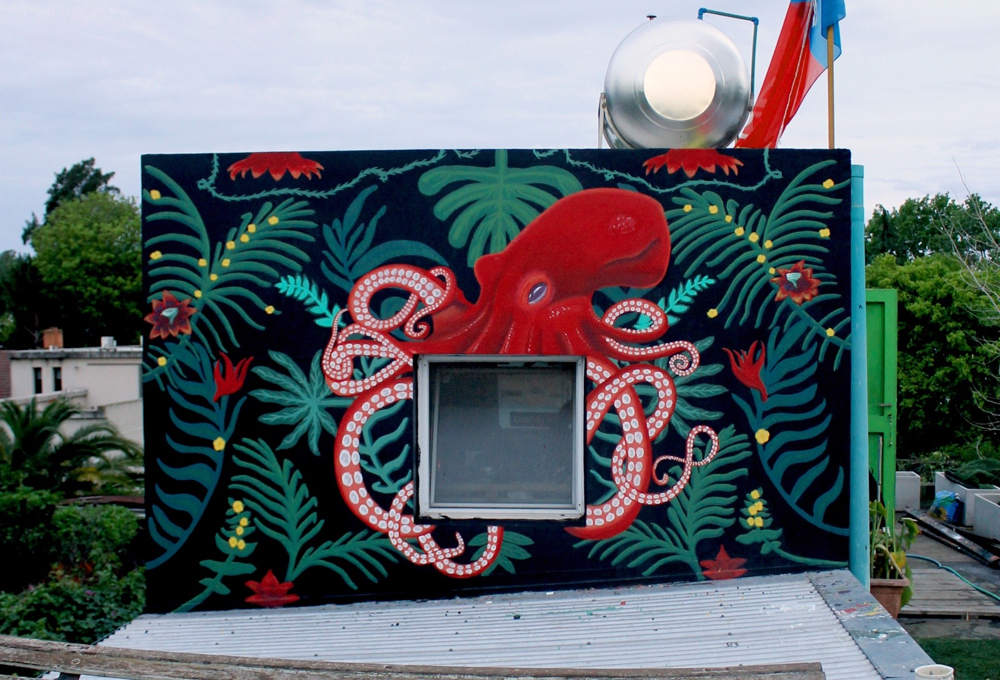
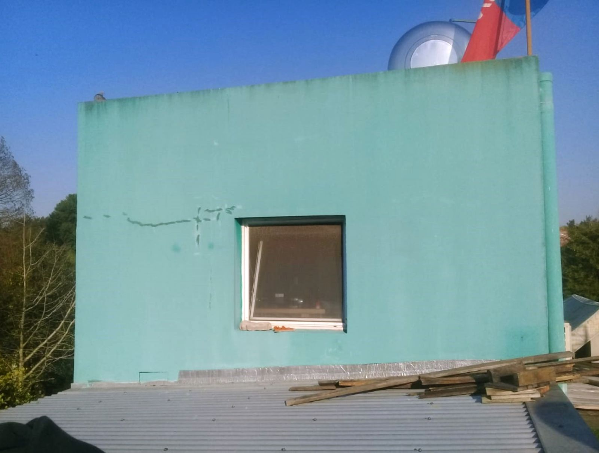

Service 01
Murals
Custom wall art designed for the architecture, audience and story of each space.
Home interiors
A piece designed around the room's light, scale and architecture.
Commercial spaces
Murals for stores, offices, restaurants and hospitality spaces, built around the identity of each place.
Exterior and public walls
Large-scale work made for facades, festivals and public spaces, with materials chosen for outdoor durability.

BeforeAfter
Tell me about your project
Request a quoteAnswer a few simple questions and I will prepare a proposal for your space, event or team.